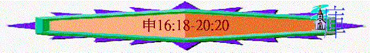

|
持
得
豐
盛
之
關
鍵 |
|||||
|
勇敢踏上 |
謹守遵行 |
選擇上好 |
追念失敗 |
得蒙賜福 |
效法神僕 |
|
１－３ |
４－２６ |
２７－３０ |
３１－３２ |
３３ |
３４ |
3.謹守遵行的細則(12-26)
A.宗教細則(12:1
-16:17)
B.國家規條(16:18-20:20)
〜啟發問題：以往以色列人過著飄流的生活，沒正式的地土，在人看來，不算是一個國家，但若得了地，成為以色列國後，在政治上，應如何運作，成為一個合神心意的國度呢？
a.關乎地方領袖(16:18-18:22)
(1)地方官長(16:18-17:13)
(A)應有的態度
(a)不看人的外貌
(b)不看人的財富
(c)不看人的性別
(B)應有的認識
(a)神所恨惡的事→對神不忠
(b)神所憎惡的事→對神不尊
(C)實際的執行
(a)判決程序
((1))以真神的律法為準則
((2))以真確的態度來查考
((3))以除罪的決心來處決
〜治死的目的是除罪，將罪惡從選民中間除掉，審判官須有這大的決心
〜也使百姓害怕，不再擅自行事
(b)難審案件
((1))以交托真神為出路
〜在地方案件中，有難處理的訴訟，需帶到宗教層面，將案件呈到代表神的祭司面前，祭司熟習神的話，也有烏陵、土明可求問神，他們可以用神的原則，神的意思作出判語
((2))以絕對順服為依歸
「要按他們所指教你的律法，照他們所斷定的去行；他們所指示你的判語，你不可偏離左右。若有人擅敢不聽從那侍立在耶和華你神面前的祭司，或不聽從審判官，那人就必治死；這樣，便將那惡從以色列中除掉。」17:11-12
〜百姓當順服侍立在神面前的祭司及審判官作出的裁判，若有不聽，那人必治死。
(2)君王領袖(17:14-20)
(A)人的要求
「「到了耶和華你神所賜你的地，得了那地居住的時候，若說：『我要立王治理我，像四圍的國一樣。』」17:14
「以色列的長老都聚集，來到拉瑪見撒母耳，對他說：「你年紀老邁了，你兒子不行你的道。現在求你為我們立一個王治理我們，像列國一樣。」」撒上8:4-5
〜以色列人可以沒君王統治，繼續由先知，如摩西的領袖、祭司、審判官帶領他們，但神知道他們羡慕列邦的君王制度，也容他們可以立君王
(B)神的揀選
「你總要立耶和華你神所揀選的人為王。必從你弟兄中立一人；不可立你弟兄以外的人為王。」申17:15
(C)王的守則
(a)要知足
「只是王不可為自己加添馬匹，也不可使百姓回埃及去，為要加添他的馬匹，因耶和華曾吩咐你們說：『不可再回那條路去。』」17:16
「他也不可為自己多立妃嬪，恐怕他的心偏邪；也不可為自己多積金銀。」17:17
〜不可為自己加添馬匹
〜不可為自己多立妃嬪
〜不可為自己多積金銀
＊強調「不為自己」「不多」，君王主要是服事百姓，不是為自己的，也需有知足的心，「貪財」是萬惡之根，人有貪的意念，心會偏邪。
(b)不走差
「只是王不可為自己加添馬匹，也不可使百姓回埃及去，為要加添他的馬匹，因耶和華曾吩咐你們說：『不可再回那條路去。』」17:16
〜作為王，不要令百姓及自己走差路，特別走回埃及路，埃及代表世界，代表拜偶像，為奴之地，神使選民從為奴、偶像、世界之地走出來，君王不應以馬匹不夠(埃及盛產駿馬)，回埃及之路加添馬匹
(c)要謹守
「他登了國位，就要將祭司利未人面前的這律法書，為自己抄錄一本，存在他那裡，要平生誦讀，好學習敬畏耶和華他的神，謹守遵行這律法書上的一切言語和這些律例，免得他向弟兄心高氣傲，偏左偏右，離了這誡命。這樣，他和他的子孫便可在以色列中，在國位上年長日久。」17:18-20
〜平生誦讀神的話
〜學習敬畏耶和華
〜謹守遵行祂律法
(3)宗教領袖(18)
(A)在神面前侍立的利未人
(a)以神為足的事奉
「祭司利未人和利未全支派必在以色列中無分無業；他們所吃用的就是獻給耶和華的火祭和一切所捐的。他們在弟兄中必沒有產業；耶和華是他們的產業，正如耶和華所應許他們的。」18:1-2
〜祭司無分無業，他們的滿足是能親近神，能事奉神，神是他們的產業，他們的滿足
(b)得神供應的事奉
「祭司從百姓所當得的分乃是這樣：凡獻牛或羊為祭的，要把前腿和兩腮並脾胃給祭司。初收的五穀、新酒和油，並初剪的羊毛，也要給他。」18:3-4
「除了他賣祖父產業所得的以外，還要得一分祭物與他們同吃。」18:8
〜他們日常生活需要，由百生所獻之物(已屬神)，得所需的分，是神賜的
(c)更深承擔的事奉
「利未人無論寄居在以色列中的哪一座城，若從那裡出來，一心願意到耶和華所選擇的地方，就要奉耶和華他神的名事奉，像他眾弟兄利未人侍立在耶和華面前事奉一樣。」18:6-7
「你吩咐以色列人，要從所得為業的地中把些城給利未人居住，也要把這城四圍的郊野給利未人。這城邑要歸他們居住，城邑的郊野可以牧養他們的牛羊和各樣的牲畜，又可以安置他們的財物。」民35:2-3
〜利未人不一定住在神選擇敬拜之地，可以住在以色列地四十八座城(連逃城)牧養他們的牛羊，安置他們的財物，他們可按著班次時候，來到神選擇之地服事祂
〜但利未人若想更深的親近祂，可放棄原本所住的城，來到及後的耶路撒冷與弟兄一同事奉。
(B)在神面前分別的完全人
「你到了耶和華你神所賜之地，那些國民所行可憎惡的事，你不可學著行。你們中間不可有人使兒女經火，也不可有占卜的、觀兆的、用法術的、行邪術的。」申18:9-10
「你要在耶和華你的神面前作完全人。」18:13
〜百姓如何，同樣可以在宗教上有更深層次，作完全人，只要分別出來，不隨從外邦異教風俗行為，不行神所僧惡之事
(C)在神面前宣講的代言人
(a)超凡的先知
「耶和華你的神要從你們弟兄中間給你興起一位先知，像我，你們要聽從他。」18:15
「我必在他們弟兄中間給他們興起一位先知，像你。我要將當說的話傳給他；他要將我一切所吩咐的都傳給他們。誰不聽他奉我名所說的話，我必討誰的罪。」18:18-19
((1))是一位的
((2))是從以色列而出的
((3))像摩西的
((4))有神的話的
((5))有神給的權柄的
((6))是神所興起的
((7))是基督
「摩西曾說：『主神要從你們弟兄中間給你們興起一位先知像我，凡他向你們所說的，你們都要聽從。」徒3:22
「那曾對以色列人說『神要從你們弟兄中間給你們興起一位先知像我』的，就是這位摩西。」」徒7:37
(b)虛假的先知
((1))他們的特質
「若有先知擅敢託我的名說我所未曾吩咐他說的話，或是奉別神的名說話，那先知就必治死。」申18:20
〜神沒有給權柄的
〜神沒有給吩咐的
((2))驗証的方法
「先知託耶和華的名說話，所說的若不成就，也無效驗，這就是耶和華所未曾吩咐的，是那先知擅自說的，你不要怕他。」18:22
〜奉神的名，用神的權柄所說的若不成就，及沒應驗即是假的
((3))應要的對待
「若有先知擅敢託我的名說我所未曾吩咐他說的話，或是奉別神的名說話，那先知就必治死。」18:20
〜不怕他們
〜治死他們
b.關乎地土處理(19:1-14)
(1)施予恩典
(A)設立逃城
「耶和華你神將列國之民剪除的時候，耶和華你神也將他們的地賜給你，你接著住他們的城邑並他們的房屋，就要在耶和華你神所賜你為業的地上分定三座城。要將耶和華你神使你承受為業的地分為三段；又要預備道路，使誤殺人的，都可以逃到那裡去。」19:1-3
〜為誤殺之人，設立三座逃城，他們只要逃到三座城，就受保護
(a)沒有動機殺人
「誤殺人的逃到那裡可以存活，定例乃是這樣：凡素無仇恨，無心殺了人的，就如人與鄰舍同入樹林砍伐樹木，手拿斧子一砍，本想砍下樹木，不料，斧頭脫了把，飛落在鄰舍身上，以致於死，這人逃到那些城的一座城，就可以存活。」19:4-5
(b)沒有意圖殺人
「若有人恨他的鄰舍，埋伏著起來擊殺他，以致於死，便逃到這些城的一座城，本城的長老就要打發人去，從那裡帶出他來，交在報血仇的手中，將他治死。」19:11-12
(B)額外施恩
「你若謹守遵行我今日所吩咐的這一切誡命，愛耶和華你的神，常常遵行他的道，就要在這三座城之外，再添三座城，」19:9
(2)勿存貪念
「在耶和華你神所賜你承受為業之地，不可挪移你鄰舍的地界，那是先人所定的。」19:14
C.關乎案件審理(19:15-21)
(1)要真實查究爭訟案件
「人無論犯什麼罪，作什麼惡，不可憑一個人的口作見證，總要憑兩三個人的口作見證才可定案。」19:15
〜不受人的兇惡影響，要有二三個人的口作見証，要細細查究
(2)要嚴治作假見証之人
「審判官要細細地查究，若見證人果然是作假見證的，以假見證陷害弟兄，你們就要待他如同他想要待的弟兄。這樣，就把那惡從你們中間除掉。別人聽見都要害怕，就不敢在你們中間再行這樣的惡了。」19:18-20
d.關乎出外爭戰(20)
(1)士氣問題→除掉懼怕
(A)真神同在應許的激勵
「你出去與仇敵爭戰的時候，看見馬匹、車輛，並有比你多的人民，不要怕他們，因為領你出埃及地的耶和華你神與你同在。」20:1
「說：『以色列人哪，你們當聽，你們今日將要與仇敵爭戰，不要膽怯，不要懼怕戰兢，也不要因他們驚恐；因為耶和華你們的神與你們同去，要為你們與仇敵爭戰，拯救你們。』」20:3-4
(B)人懼怕可離去的選擇
「官長也要對百姓宣告說：『誰建造房屋，尚未奉獻，他可以回家去，恐怕他陣亡，別人去奉獻。誰種葡萄園，尚未用所結的果子，他可以回家去，恐怕他陣亡，別人去用。誰聘定了妻，尚未迎娶，他可以回家去，恐怕他陣亡，別人去娶。』官長又要對百姓宣告說：『誰懼怕膽怯，他可以回家去，恐怕他弟兄的心消化，和他一樣。』
〜有以下幾種情況，百姓可以回去不參與戰爭
(a)未入住剛建之房屋(未行奉獻之禮)
(b)未享葡萄園之初果
(c)未迎娶所聘之妻子
(2)宣戰問題→先求和睦
(A)先和睦
「你臨近一座城、要攻打的時候，先要對城裡的民宣告和睦的話。他們若以和睦的話回答你，給你開了城，城裡所有的人都要給你效勞，服事你；」20:10-11
(B)後攻打
「若不肯與你和好，反要與你打仗，你就要圍困那城。耶和華你的神把城交付你手，你就要用刀殺盡這城的男丁。惟有婦女、孩子、牲畜，和城內一切的財物，你可以取為自己的掠物。耶和華你神把你仇敵的財物賜給你，你可以吃用。」20:12-14
(3)軍糧問題→懂珍惜
「你若許久圍困、攻打所要取的一座城，就不可舉斧子砍壞樹木；因為你可以吃那樹上的果子，不可砍伐。田間的樹木豈是人，叫你糟蹋嗎？惟獨你所知道不是結果子的樹木可以毀壞、砍伐，用以修築營壘，攻擊那與你打仗的城，直到攻塌了。」20:19-20